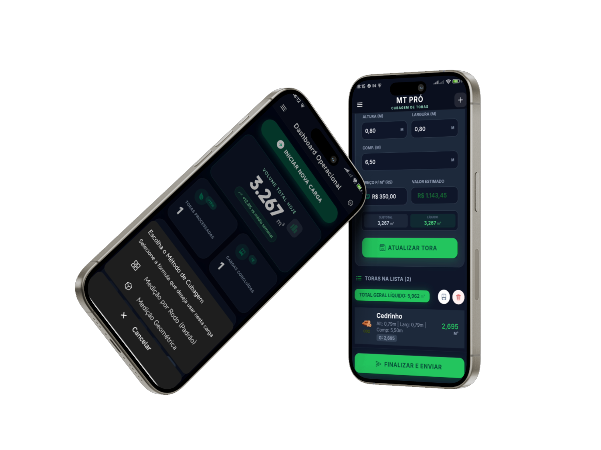
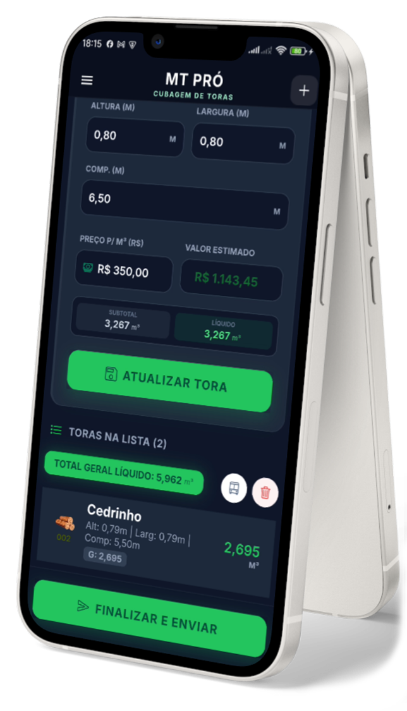

Suporte de verdade
Atendimento rápido para manter a operação rodando e ajudar sua equipe a usar o app no dia a dia.

O MT Pró transforma a rotina do campo em uma operação mais ágil: menos papel, menos erro manual e relatórios prontos para acompanhar a produtividade.
Baixar APKAtendimento rápido para manter a operação rodando e ajudar sua equipe a usar o app no dia a dia.
As informações da sua operação ficam protegidas para garantir controle, rastreabilidade e confiança no processo.
Feito para cubar, calcular e gerar relatórios com rapidez mesmo em rotinas intensas no pátio ou no campo.
Registre medições com agilidade e reduza o tempo gasto com cálculos manuais na rotina da madeira.
Tenha saídas organizadas para análise e compartilhamento sem depender de planilhas improvisadas.
Um fluxo pensado para uso em operação, evitando travas e simplificando o trabalho em campo.
Estrutura preparada para trabalhar com os métodos usados na rotina de cubagem e conferência.
Acompanhe medições, volumes e produtividade de forma organizada dentro do próprio aplicativo.
Uma base fácil de colocar para rodar e treinar, sem burocracia desnecessária para começar.
Visualize o que foi medido e o que precisa de atenção sem depender de conferências espalhadas.
Menos retrabalho, menos papelada e decisões mais rápidas para manter a produtividade em alta.

Uma visão rápida da experiência do MT Pró para cubagem, consulta de dados e acompanhamento da operação.
Escolha o plano ideal para testar, operar no dia a dia e escalar o uso do MT Pró conforme a sua rotina de cubagem evolui.
Uma solução pensada para operação em campo, supervisão e empresas que precisam ganhar agilidade sem perder controle.
Baixe o aplicativo atual e use esta área como ponto de entrada para o contato comercial, demonstração da solução e próximos passos de implantação.